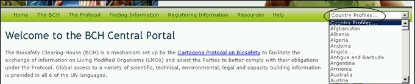

عنوان الموقع على الشبكة: http://bch.cbd.int/
كل الصفحات المتوفرة على غرفة تبادل معلومات السلامة الاحيائية تؤمن وسيلة بحث سريعة للحصول على الموجزات القطرية. الوصلة مؤمنة على جهة اليمين من شريط التصفح. قوائم الاختيارات المنسلة تسمح للمستخدم ان يختار البلد ويظهر موجز بكافة سجلات البلد المدخلة الى غرفة تبادل معلومات السلامة الاحيائية.

صورة 8
تتضمن الموجزات القطرية معلومات ووضع كل بلد كالتالي:البلد، تاريخ التوقيع، تاريخ التصديق، تاريخ الدخول حيز التنفي، مراجعة الموجز، وضع الموجز وتاريخ تحديثه. فهو يوفر قائمة بانواع المستندات (على سبيل المثال نقطة الاتصال الوطنية، القوانين، التشريعات و الدليل، تقييم المخاطر، الخ) مع الوصلات للوصول الى تلك السجلات. يحدد عدد السجلات لكل نوع مستند بالاضافة الى تاريخ تحديثه.